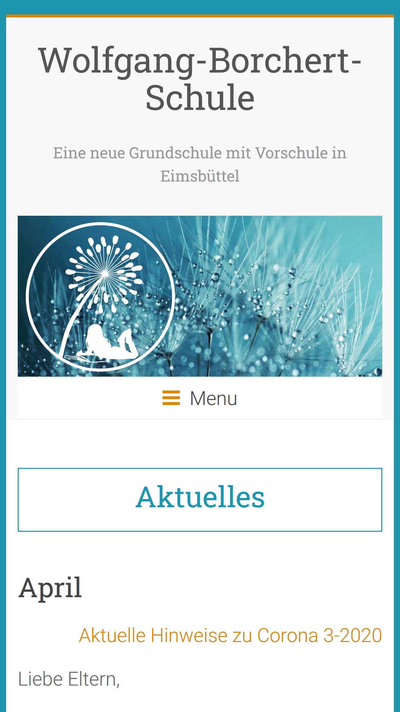

Schulweg
Schulweg - sicher zur Schule - ist eine React App. Mit Ihr können sich Eltern organisieren um Ihre Grundschulkinder in begleiteten Gruppen zur Schule gehen zu lassen.

Verwendete Technologien
React, JSX, JavaScript, React-Hooks, Styled Components, React Spring, Google Maps API, Google Places API, Local Storage, React-Router, Adobe Comp, Github, Storybook, Jest, Cypress
Home Schooling
Home Schooling ist ein Projekt, welches Lehrer und Eltern dabei unterstützen soll, die Lernmaterialien für das home schooling digital zu unterstützen und sich zu Hause noch besser zu strukturiere.

Verwendete Technologien
React, JSX, JavaScript, React-Hooks, Styled Components, React-Router, Adobe Comp, Github, Firebase
Nacira
Relaunch der personal Website. Zum Abschluss meines Webdeveloper Bootcamps und zu Beginn meines neuen Berufsweges, habe ich meine Website neu gestaltet.

Verwendete Technologien
Angular, TypeScript, CSS, Routing, GitHub, Adobe Comp
Singularity - HR
Relaunch der Business Website. Erhalt des Logos und der Farben. Dynamische Inhalte, Newsblog, Bilingual (Deutsch/Englisch).
Project Details
Webdesign, Graphics, Wordpress, CSS
Wolfgang-Borchert-Schule
Grafik - und Webdesign einer neu gegründeten Grundschule in Hamburg. Kontinuierliche Beratung und Betreuung in Design Fragen.

Project Details
Farbkonzept, Grafik Design, Logo Design, Illustrationen, Grafiken, Webdesign, Wordpress, CSS-Anpassungen, Flyer, Plakate